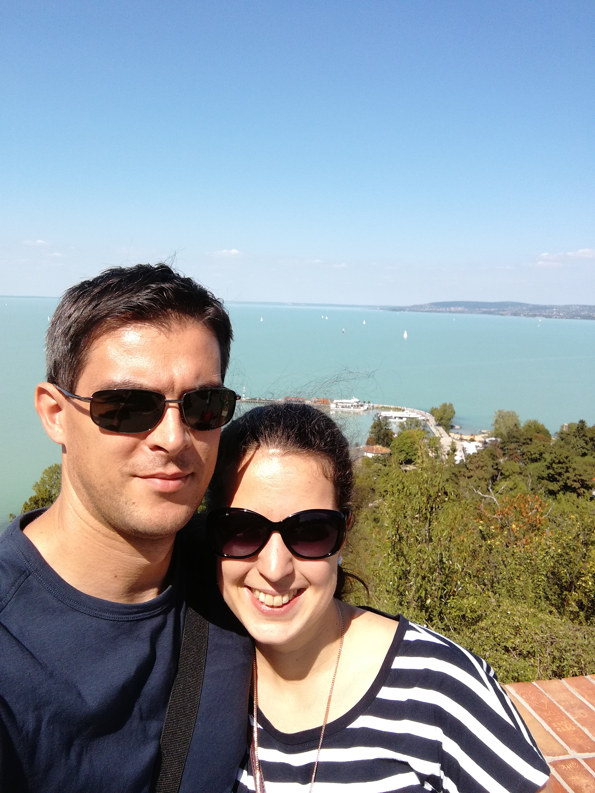
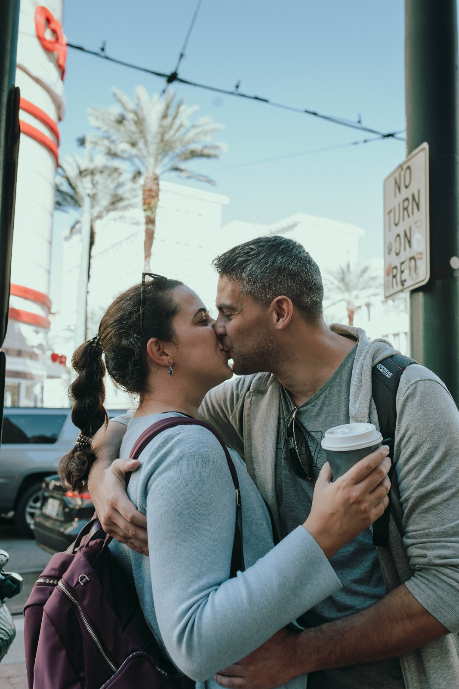
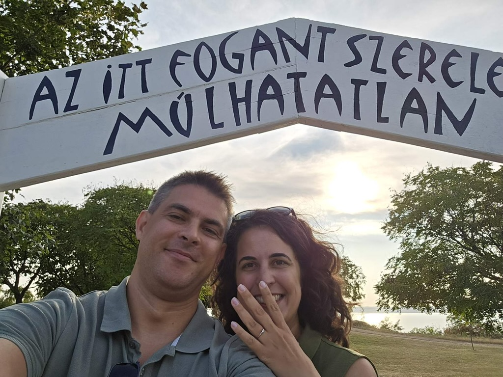

Szertartás
Szombat, 14:00
Fasori Evangélikus Templom
1071 Budapest, Városligeti fasor 17
Összeházasodunk (még egyszer)
2026. szeptember 19.
Budapest
Furcsa ezt kimondani, de a mi kerítőnk az a szépemlékű MTA TTK volt. 11 éve, mikor a Karolina úti telephelyre belibbent Erzsó kisdiák, akaratlanul is azonnal elcsavarta a köztudottan magánakvaló István fejét.
Megannyi átbeszélt reggeli kakaós csiga-fogasztást egy apró, szó szerint Csészényi kávé(zó) követte. A romantikus randevúk (itt megoszlanak a vélemények mit is tekintünk annak, de a kaparós térkép nem hazudik) árnyékában kezdett kibontakozni a közös hobbi fogalma.
Nem, nem a mókus vadászatot,a kertészkedést vagy Mustang lest kell ideképzelni. Sokkal inkább a világ felfedezését. Kicsiben, nagyban, de mindenképpen Együtt! Kézen fogva feszegettük egymás határait megannyi élményen keresztül, vagy támogattuk egymást szorult helyzetekben. Vagy éppen belátjuk, hogy ami az egyik szerint feszített tempójú napirend, az a másiknak egy átlagos kedd délután.
Aztán 2025-ben Las Vegasban, Elvis előtt, örömkönnyek között mondtuk ki az „uh-huh”-t. Ami persze leírva banálisan hangzik, de ott és akkor mi voltunk a legboldogabbak ezzel a kifejezéssel.
De valami még hiányzott: nem a zöldkártya, hanem Ti. A család és a barátok jelenléte, akik végig mellettünk álltatok, és akikkel most szeretnénk ezt az egészet igazán megünnepelni.




Szombat, 14:00
Fasori Evangélikus Templom
1071 Budapest, Városligeti fasor 17
Szombat, 18:00
Duna Garden
1203 Budapest, Vízisport utca 12-18. A. ép.
Van hivatalos fotósunk, ezért a templomban kérjük, tartsátok zsebben a telefont a szertartás alatt — az estén pedig legyünk inkább egymással, ne a feeddel. Utána jöhet minden kedvenc pillanat, mi is megosztjuk veletek a képeket!
Az esküvő napja
A leggyakoribb kérdésekre itt röviden válaszolunk — a részleteket a GYIK oldalon találod.
A templomnál szombaton ingyenes az utcai parkolás; a Duna Gardennél ingyenes parkoló vár a helyszínen.
Részletek a GYIK-benA szállást mindenki magának intézi — érdemes olyan helyet választani, ami a templomhoz és a Duna Gardenhez is kényelmesen elérhető.
Részletek a GYIK-benIgen, jöhetnek — lesz játszószoba és füves terület. Kisbabákkal is számítunk, dedikált pihenőszoba is vár az édesanyákra.
Részletek a GYIK-benNincs ajándéklista — a jelenlétetek a legnagyobb ajándék. Ha mégis szeretnétek meglepni minket, azt is örömmel fogadjuk.
Részletek a GYIK-benSegítsetek a hangulathoz
Küldj egy számot, amire tuti táncolnál — akár a csendes sarokban, akár a széken ülve, csak lábbal. Add hozzá a közös Spotify listánkhoz, és mi gondoskodunk róla, hogy a hangulat stimmeljen.
A Spotify alkalmazásban vagy böngészőben nyitható meg.
Lépj kapcsolatba velünk
Ha bármi kérdésetek lenne, írjatok vagy hívjatok minket bizalommal.